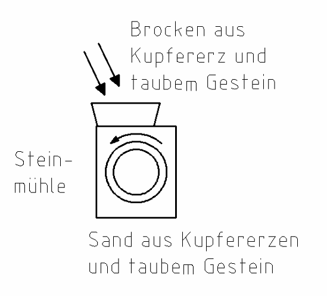
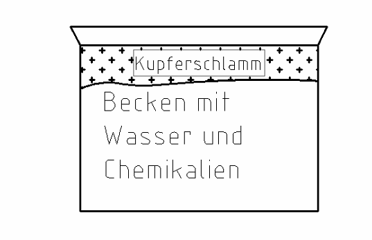
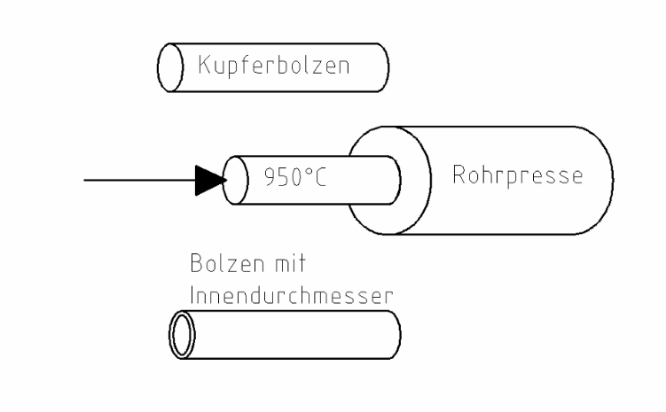
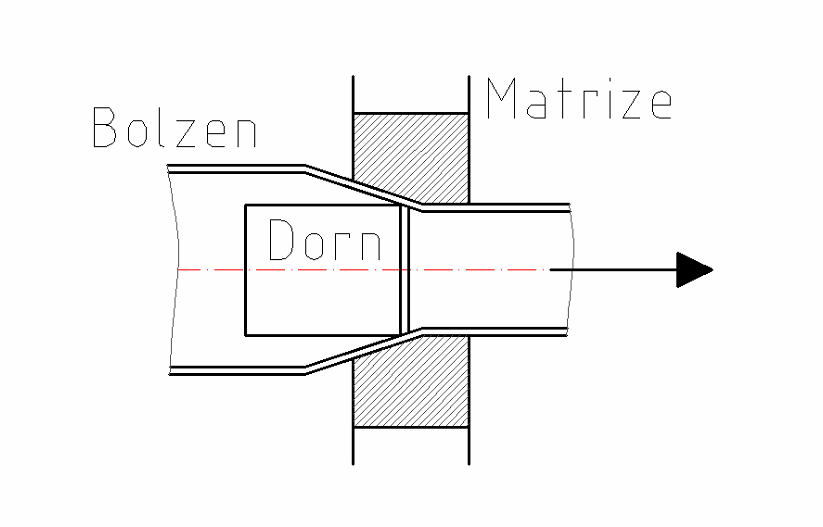

2 Kupfer
Tippe die richtige Antwort an. Dann tippe auf „Prüfen“.
Kupfer erkennst du an der rötlichen Farbe. Installateure verwenden Kupferrohre für Wasser, Gas und Heizung.
So entsteht Kupfer

- Kupfererz wird in großen Minen abgebaut, im Tagebau (unter freiem Himmel).
- Das Erz ist mit Gestein vermischt.
- Steinbrecher (im Bild: Steinmühle) mahlen die Brocken zu einem Material wie Sand.

- Das Kupfer-Sand-Gemisch kommt in Becken mit Wasser und Chemikalien.
- Der Kupferschlamm schwimmt oben. Er wird abgeschöpft.
- Die Chemikalien belasten die Umwelt.
Für 1 kg Kupfer muss man ca. 100 kg Gestein abbauen. Darum ist es wichtig, Altkupfer zu sammeln.
Rohstoffe: Kupfererz, Altkupfer
Vorteile: temperaturbeständig (hält Hitze aus), rostet nicht, guter Strom- und Wärmeleiter
Nachteile: hohes Gewicht, hoher Preis
Verwendung: Rohre, Kabel, Wärmetauscher
Aufgabe 1
Vorteil oder Nachteil von Kupfer?
a) hoher Preis
b) temperaturbeständig
c) guter Strom- und Wärmeleiter
d) hohes Gewicht
Aufgabe 2
Lückentext Kupferherstellung. Tippe das Wort für ____ an.
1. Die Gesteinsbrocken werden in ____ zu einem sandförmigen Material zerrieben.
2. Die Herstellung von Kupfer ist sehr ____. Die Chemikalien belasten die Umwelt.
Recycling = Altes wird gesammelt und wieder verwertet.
3. Kupfer kann ____ werden. Darum ist es wichtig, Altkupfer zu sammeln.
4. Kupfer ist ein guter ____- und Wärmeleiter.
5. Darum verwendet man Kupfer oft bei ____ und Wärmetauschern.
Kupferrohre

1. Ein Kupferbolzen wird erhitzt (ca. 950 °C).
2. Er wird in eine Rohrpresse gedrückt.
3. In der Mitte entsteht ein Loch.

4. Der Bolzen wird durch eine Matrize gezogen. Der Durchmesser wird Schritt für Schritt kleiner.
5. Innen ist ein Dorn. Er heißt „fliegender Dorn“. Er formt den Innendurchmesser.
Matrize = eine Form mit einem runden Loch. Das Rohr wird durchgezogen und bekommt so sein Maß.
Kupferrohre gibt es in verschiedenen Härtestufen (weich oder hart). Welche Härtestufe man nimmt, hängt von der Verwendung ab (siehe Tabelle).
Man verbindet sie durch Löten, durch Stecken oder durch Pressen.
| Verwendung | Härtestufe | Verbindung |
|---|---|---|
| Trinkwasser | weich | Weichlöten |
| Gas | hart | Hartlöten |
| Heizung (unter 90 °C) | weich | Weichlöten |
Aufgabe 3
Welche Härtestufe und welche Verbindung passen? Tippe an. Die Tabelle oben hilft dir.
Trinkwasser: Härtestufe
Trinkwasser: Verbindung
Gas: Härtestufe
Gas: Verbindung
Heizung (unter 90 °C): Härtestufe
Heizung (unter 90 °C): Verbindung
Aufgabe 4
Lückentext Kupferrohre. Tippe das Wort für ____ an.
1. Ein ____ wird auf ca. 950 °C erhitzt.
2. Er wird durch eine ____ gedrückt.
3. Mit einer ____ bekommt der Durchmesser das richtige Maß.
4. Kupfer ist ____ und rostet nicht. Darum nimmt man es für Heizung, Trinkwasser und Gas.
5. Die Härtestufe hängt von der ____ ab.
6. Kupferrohre kann man stecken, pressen oder ____.